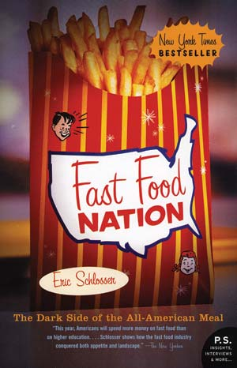
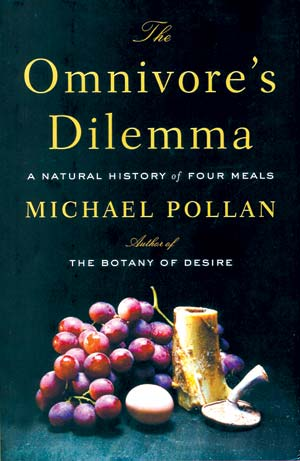
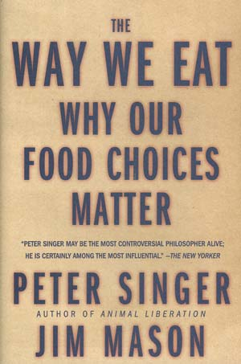
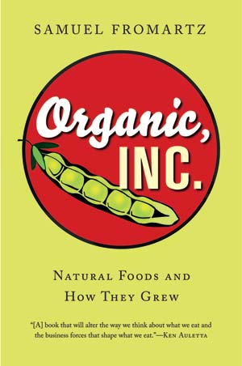
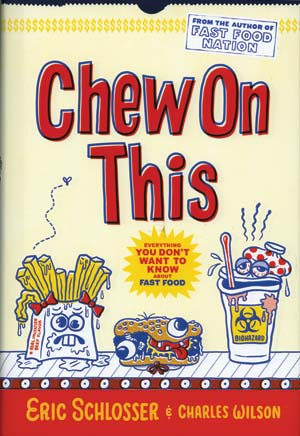

One summer evening when I lived in Brooklyn, I snipped a leaf of basil from the potted herb garden I kept in front of my apartment, absently popping it in my mouth. Kids were playing on the sidewalk, their shouts echoing through the humid air. One kid took note. “Oooh!” he shouted. “He ate a plant!” Suddenly, seven or eight 10-year-olds were pointing and gaping at me. I had done something exotic, strange, suspect even: I had eaten plant matter.
For me, this illustrates how far we’ve traveled from our agricultural roots. In 1930, 20 percent of Americans owed their livelihoods to farming. Today, fewer than 2 percent do. We consume nearly 40 percent of our food outside the home. We have entered a post-agricultural age. Knowledge about food production, which used to come from direct experience, now comes from food-industry marketing execs and government directives.
For most Americans, the answer is simple: supermarkets and restaurants. In a nation where almost nobody farms and few regularly cook, that’s a fair response. But such reasoning hides vast social, ecological and economic chains that ultimately tether us to the earth. People can blithely devour Chicken McNuggets dipped in ketchup without ever thinking about factory-farmed chickens, working conditions in slaughterhouses or on farms, or the chemicals used to fertilize fields and kill weeds and pests. Happily, there are several new books educating us about farm-to-plate issues.
The trend started with Eric Schlosser’s groundbreaking Fast Food Nation: The Dark Side of the All-American Meal, which brought an investigative reporter’s zeal to tracing the holy trinity of American eating - burger, fries and a Coke - back to the fields, factories, corporate meetings and laboratories from which they hail. Fast Food Nation, a best seller now on the big screen, reminded many Americans that what’s on their plate has a history worth thinking about.
No fewer than four books released in 2006 tread down the path broken by Schlosser. Michael Pollan’s best seller, The Omnivore’s Dilemma, is arguably the best. The author provides an exhaustive “natural history of four meals.” Broadening Schlosser’s mandate, Pollan trains a hungry eye on industrially produced fare, and on the alternatives. He also subjects the various food chains to his gourmand’s palate, reminding us that the industrialized food supply has ruined people’s ability to take real pleasure in food.
Pollan’s analysis implies something hopeful, though: that by reclaiming the pleasures of the table, we can reverse much of the environmental and social wreckage we create in feeding ourselves.
For Peter Singer and Jim Mason, the veteran animal rights polemicists, the pleasure principle doesn’t matter much. They’ve written The Way We Eat: Why Our Food Choices Matter, a book similar in ambition and scope to Omnivore’s Dilemma. But if Pollan returns again and again to aesthetics - parsing the subtle differences in flavor between a grain-fed Whole Foods organic chicken and a pasture-raised one slaughtered on the farm - Singer and Mason focus solely on ethics. What are the costs, and who (or what) pays them, when we choose between, say, a meal based on meat procured at Wal-Mart or one made from tofu bought at Whole Foods?
As a framing device, Singer and Mason devote major sections to three families: one that eats the “standard American diet” of industrially produced fare; another made up of “conscientious omnivores” who eat “humanely produced” meat and mostly organic vegetables; and (clearly closest to the authors’ hearts) a family of strict vegans. Singer and Mason tag along with each family on grocery-shopping ventures and hang out in the kitchen to cook and eat. Then they trace the major food items to their origins, exhaustively documenting the production conditions.
Another book released in 2006, Samuel Fromartz’s Organic, Inc.: Natural Foods and How They Grew, focuses on the rapidly growing organic food industry and is a worthy read. A veteran business reporter, Fromartz knows how to lay out an industry’s history compellingly. His chapter on California’s organic baby lettuce business, responsible for those bags of pre-washed, flavorless, sometimes deadly salad greens now found everywhere from Whole Foods to Wal-Mart, should be required reading for anyone interested in the commodification of organic.
Fromartz details how the baby lettuce craze started when famed restaurateur Alice Waters ate a peppery mesclun salad in Nice, France, in the early 1980s. Her will to recreate that experience in northern California helped catalyze what’s now a $2.5 billion industry. Fromartz describes how the mass production of baby lettuce drove prices down, making the product widely accessible but compromising its flavor and driving many small producers out of business. These same processes, though, provided opportunities for new growers who sell direct to consumers in local markets, competing with the California giants based not on price but on flavor. Thus Waters’ vision of peppery Nice-style greens lives on in niches - for those who can afford it.
In Organic, Inc.’s most important chapter, Fromartz profiles Pennsylvania farmers Jim and Moie Crawford, one of the great success stories of the U.S. farmers market movement. The Crawfords were among the back-to-the-landers who pioneered the practice of selling directly to consumers. Fromartz is excellent at teasing out the incredible amount of tenacity and innovation it takes to create a successful local-oriented farm business - and conveying how even the best-established operations rest on shaky economic ground. After 35 years of farming, the Crawfords are still waking up at 3:30 a.m. to make the two-and-a-half hour trek to their Washington, D.C., farmers market. And they have yet to build a comfortable retirement fund. Such are the sacrifices, Fromartz implies, needed to create a robust local food economy in a market dominated by giant retailers and megafarms.
Of all the food-politics books released in 2006, the one that seems the least significant may end up being the one with the most impact. Fast Food author Eric Schlosser has teamed up with journalist Charles Wilson, and come out with Chew on This: Everything You Don’t Want to Know About Fast Food. Like marketing execs, Schlosser and Wilson know that the easiest way to affect eating habits is to focus on the young and impressionable. The fast food industry has pursued this goal by directing hundreds of millions of marketing dollars toward the young. Schlosser and Wilson have responded by repackaging Fast Food Nation to appeal to young readers. Their goal: to make kids who have been drawn in by the fast food industry’s well-engineered aromas “turn and walk out the door.”
Chew on This is backed by 30 pages of footnotes and the integrity that made Fast Food Nation impervious to the industry’s attempts to discredit it. I have no idea how kids will respond, but I found the book’s straight-talk style and jokey prose irresistible. Under assault by Schlosser and others, the industry has strained over the past few years to burnish its image. These days, parts of McDonald’s Web site read as though they were written by the Sierra Club. Chew on This shreds this empty rhetoric like a factory cutter preparing iceberg lettuce for its place on a million Big Macs. I hope the book finds a wide audience among kids - and their parents and teachers, too.
These books represent stirrings of a new, or at least long-repressed, hunger, a desire to reconnect to the sources of our sustenance. The more we know about how our food is produced, the less likely we’ll be to accept the slop cooked up by industry - or the environmental and social damage caused in the process.
- Tom Philpott
Tom Philpott farms and cooks at Maverick Farms, a sustainable nonprofit in North Carolina. Read his online column, Victual Reality, on Grist, the free, online environmental magazine that publishes “gloom and doom with a sense of humor.”
|
 HOUGHTON MIFFLIN BOOKS Fast Food Nation: The Dark Side of the All-American Meal by Eric Schlosser |
 PENGUIN The Omnivore's Dilemma: A Natural History of Four Meals by Michael Pollan |
 HOLTZBRINCK PUBLISHERS The Way We Eat: Why Our Food Choices Matter by Peter Singer and Jim Mason |
|
 HARCOURT TRADE Organic, Inc.: Natural Foods and How They Grew by Samuel Fromartz |
 HMCO CHILDREN'S BOOKS Chew on This: Everything You Don't Want to Know About Fast Food by Eric Schlosser and Charles Wilson |
|